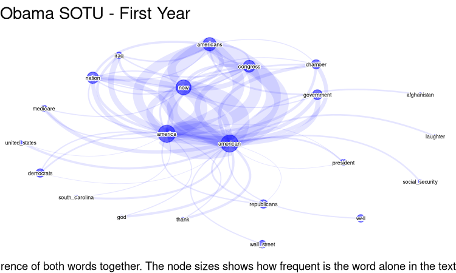

02 Rule based entity extraction with regular expression
Source:vignettes/regex_entities_extraction.Rmd
regex_entities_extraction.RmdEntity extraction and its relations
The package {networds} provides a set of tools to extract entities and relations from text. The networds tool described in this article, uses one of the simples form: the rule based approach. It contains a rule based extraction algorithm and a rule based relation extraction algorithm. Another similar package is textnets, from Chris Bail, that captures proper names using UDPipe, plot word networks and calculates the centrality measures of words in the network. To extract entities based on Part of Speech Tagging, see other functions of this package,
The functions of {networds} based on word and pattern of words co-occurrence do not work so well like the NER, but we think that, in some situations, they can be better job than traditional joining unigram, bigrams, trigrams and so on. Because it is a rule based approach, it is very simple to use, need less dependencies and runs also fast (or maybe less slower). It will also requires a lot of post-cleaning, but you have the absolute control over which words are extracted and what words are rejected.
In Natural Language Processing, to find proper names or terms that
frequently appears together is called “collocation”, e.g., to find
“United Kingdom”. You can learn more what is collocation and its
statistical details and r function in this article,
and it is also possible to functions like quanteda.textstats::textstat_collocations(),
TextForecast::get_collocations()
to identify them, but it also will require a lot of data cleaning,
specially if you want is proper names.
How it works?
The function captures all words that:
- begins with uppercase,
- followed by other uppercases, lowercase or numbers, without white
space
- it can contain symbols like
_,-or.. In this way, words like “Covid-19” are captured. - the user can specify a connector, like “of”or “of the” so, words like “United States of America” are also captured as one word.
In languages such as English and Portuguese, it extracts proper
names. In German, it also extracts nouns. There is some trade-off, of
course. It will capture a lot of undesired words and will demand
posterior cleaning, like:
- It does not contain any sort of built-in classification.
- “Obama Chief of Staff Rahm Emanuel” will be captured as one entity,
what is not wrong et al, but maybe not what was expected.
The downsides
It will not capture:
- entities that begin with lowercase.
- it does not delves with words ambiguity. For example, is “WHO” referring to question or World Health Organization? Washington is a person or a place?
To overthrow this problemas, networds has a set of other functions that works with Part of Speech tagging and Named Entity Recognition. If the problems enumerated are a big problem to your case, take a look at the next session “Extract entity co-ocurrences with POS”.
Conclusion
In my experience, the approach of this section using regex works better to certain types of text than others. Very well formatted text, like Books, formal articles can be a good option that works well with this function. Text from social media, because it lacks formalities of the language and have a lot of typos, lacking uppercase sometimes, or written all in uppercase, this approach will not work so well.
Using networds: extracting entities with regex
After installing the package (see Readme), load it:
So, let’s extract some proper names from a simple text:
"John Does lives in New York." |> extract_entity_rb()
#> [1] "John_Does" "New_York"Or it is possible to use other languages, specifying the parameter
connectors using the function
connectors(lang). Checking the connectors:
connectors("eng")
#> $en
#> [1] "of" "of the"
# or you can also use for english, to get the same result:
connectors("en")
#> $en
#> [1] "of" "of the"
# For portuguese
connectors("pt")
#> $pt
#> [1] "da" "das" "de" "do" "dos"
# to get the same result:
connectors("port")
#> $pt
#> [1] "da" "das" "de" "do" "dos"
# by default, the functions uses the parameter "misc". meaning "miscellaneous".
connectors("misc")
#> $misc
#> [1] "of" "the" "of the" "von" "van" "del" "de"
connectors("all")
#> [1] "da" "das" "de" "del" "di" "do" "dos" "of"
#> [9] "of the" "the" "van" "von"Using with other languages:
"João Ninguém mora em São José do Rio Preto. Ele esteve antes em Sergipe" |>
extract_entity_rb(connect = connectors("pt"))
#> [1] "João_Ninguém" "São_José" "Rio_Preto" "Ele" "Sergipe"
vonNeumann_txt <- "John von Neumann (/vɒn ˈnɔɪmən/ von NOY-mən; Hungarian: Neumann János Lajos [ˈnɒjmɒn ˈjaːnoʃ ˈlɒjoʃ]; December 28, 1903 – February 8, 1957) was a Hungarian and American mathematician, physicist, computer scientist and engineer"
vonNeumann_txt |> extract_entity_rb()
#> [1] "John" "Neumann" "NOY-"
#> [4] "Hungarian" "Neumann_János_Lajos" "December"
#> [7] "February" "Hungarian" "American"Extracting a graph
It is possible to extract a graph from the extracted entities. First,
happens the tokenization by sentence or paragraph. Than, the entities
are extracted using extract_entity_rb(). Than a data frame
with the co-occurrence of words in sentences or paragraph is build.
vonNeumann_txt |> extract_graph_rb()
#> Tokenizing by sentences
#> # A tibble: 31 × 3
#> n1 n2 n
#> <chr> <chr> <int>
#> 1 Hungarian American 2
#> 2 John Hungarian 2
#> 3 NOY- Hungarian 2
#> 4 Neumann Hungarian 2
#> 5 December American 1
#> 6 December February 1
#> 7 December Hungarian 1
#> 8 February American 1
#> 9 February Hungarian 1
#> 10 Hungarian December 1
#> # ℹ 21 more rowsOne of the parameters is sw that means “stopwords”. It
is possible to add a vector stopwords.
my_sw <- c(stopwords::stopwords(
language = "en",
source = "snowball", simplify = TRUE
), "lol")
vonNeumann_txt |> extract_graph_rb(sw = my_sw)
#> Tokenizing by sentences
#> # A tibble: 31 × 3
#> n1 n2 n
#> <chr> <chr> <int>
#> 1 Hungarian American 2
#> 2 John Hungarian 2
#> 3 NOY- Hungarian 2
#> 4 Neumann Hungarian 2
#> 5 December American 1
#> 6 December February 1
#> 7 December Hungarian 1
#> 8 February American 1
#> 9 February Hungarian 1
#> 10 Hungarian December 1
#> # ℹ 21 more rowsThis process can take a while to run if the text/corpus is big. So, if you are interested only in some words, so first of all, filter the sentences/paragraphs with the desired words, and after that, extract the graph. Seeing another example, extracting from a Wikipedia article:
page <- "https://en.wikipedia.org/wiki/GNU_General_Public_License" |> rvest::read_html()
text <- page |>
rvest::html_nodes("p") |>
rvest::html_text()
# looking at the scraped text:
text[2] # seeing the head of the text
#> [1] "The GNU General Public Licenses (GNU GPL or simply GPL) are a series of widely used free software licenses, or copyleft licenses, that guarantee end users the freedoms to run, study, share, and modify the software.[7] The GPL was the first copyleft license for general use. It was originally written by Richard Stallman, the founder of the Free Software Foundation (FSF), for the GNU Project. The license grants the recipients of a computer program the rights of the Free Software Definition.[8] The licenses in the GPL series are all copyleft licenses, which means that any derivative work must be distributed under the same or equivalent license terms. It is more restrictive than the Lesser General Public License and even further distinct from the more widely-used permissive software licenses such as BSD, MIT, and Apache.\n"And now extracting the graphs:
g <- text |> extract_graph_rb(sw = my_sw)
#> Tokenizing by sentences
g
#> # A tibble: 2,136 × 3
#> n1 n2 n
#> <chr> <chr> <int>
#> 1 GPLv3 GPLv2 26
#> 2 Artifex Hancom 19
#> 3 Ghostscript Hancom 19
#> 4 Linux GPL 16
#> 5 GPL FSF 14
#> 6 GPL-licensed GPL 14
#> 7 GPL GPLv3 13
#> 8 Artifex Ghostscript 12
#> 9 GPL GPLv2 12
#> 10 However GPL 12
#> # ℹ 2,126 more rowsTo make a quick plot
plot_graph(g)
#> Only one value passed to edge_width. All edges will have the same width.
Is possible to use the frequency of word pairs co-occurrence as weight in the net plot, as the line thickness between the nodes. We need at least two arguments: 1) the dataframe with the frequency. In this case, as the words are separated with “_“, we must first replace it with white spaces. 2) original the text, to count the frequency of the words.
g |>
dplyr::mutate(
n1 = gsub(x = n1, "_", " "),
n2 = gsub(x = n2, "_", " ")
) |>
plot_graph2(text)
#> You provided a vector of 125 elements instead of one. No problem, but these will be collapsed into a single element, with a final punctuation mark added to each.
#> | | | 0% | |==== | 5% | |======= | 11% | |=========== | 16% | |=============== | 21% | |================== | 26% | |====================== | 32% | |========================== | 37% | |============================= | 42% | |================================= | 47% | |===================================== | 53% | |========================================= | 58% | |============================================ | 63% | |================================================ | 68% | |==================================================== | 74% | |======================================================= | 79% | |=========================================================== | 84% | |=============================================================== | 89% | |================================================================== | 95% | |======================================================================| 100%
#> Using node_size proportional to word frequency as no node_size was provided in parameters
To plot the wordcloud network it is necessary two parameters: the
original text and the dataframe/tibble as returned by
dplyr::count(), with three columns: node 1, node 2 and the
weight/frequency.
g |>
dplyr::mutate(
n1 = gsub(x = n1, "_", " "),
n2 = gsub(x = n2, "_", " ")
) |>
net_wordcloud(text)
#> You provided a vector of 125 elements instead of one. These will be collapsed into a single element, with a final punctuation mark added to each.
#> | | | 0% | |==== | 5% | |======= | 11% | |=========== | 16% | |=============== | 21% | |================== | 26% | |====================== | 32% | |========================== | 37% | |============================= | 42% | |================================= | 47% | |===================================== | 53% | |========================================= | 58% | |============================================ | 63% | |================================================ | 68% | |==================================================== | 74% | |======================================================= | 79% | |=========================================================== | 84% | |=============================================================== | 89% | |================================================================== | 95% | |======================================================================| 100% There are different information in the graph:
There are different information in the graph:
- The size of words and compound words means the individual frequency of each word/compound word
- The thickness of the links indicates how often the pair occur together.
We opted to use this approach of the two parameters of data frame with weights, as well as with the original text because plotting such networks as a matter of readability, often requires to select only the most frequent. A word individual frequency is not necessarily correlated with it’s frequency in graphs, so the function calculates the individual frequency of the word. Looking at the frequency dataframe, the user may want to strip some graphs, and then plot it.
This function uses {ggraph} and ggplot. So, you can change some ggplot or add another ones a posteriori.
To plot an interactive graph, use plot_graph_i
g |> plot_graph_i()It is possible to use {networkD3} package:
g |>
head(100) |> # to reduce the amount of nodes and edges in the graph
networkD3::simpleNetwork(
height = "10px", width = "30px",
linkDistance = 50,
fontSize = 16
)Another text example.
page <- "https://en.wikipedia.org/wiki/Hurricane_Milton" |> rvest::read_html()#> Error in path_to_connection(x) :
#> inst/wiki_Hurricane_Milton.html does not exist in current working
#> directory
#> (/home/alisson/Documentos/Programação/R/meus_pacotes/networds/vignettes).
text <- page |>
rvest::html_nodes("p") |>
rvest::html_text()
text[2] # seeing the head of the text
#> [1] "Hurricane Milton was an extremely powerful and destructive tropical cyclone which became the second-most intense Atlantic hurricane ever recorded over the Gulf of Mexico, behind only Hurricane Rita in 2005. Milton made landfall on the west coast of the U.S. state of Florida, less than two weeks after Hurricane Helene devastated the state's Big Bend region.[2] The thirteenth named storm, ninth hurricane, fourth major hurricane, and second Category 5 hurricane of the 2024 Atlantic hurricane season, Milton is the strongest tropical cyclone to occur worldwide in 2024 thus far.[3]"
g <- text |> extract_graph_rb(sw = my_sw)
#> Tokenizing by sentences
g |>
dplyr::mutate(
n1 = gsub(x = n1, "_", " "),
n2 = gsub(x = n2, "_", " ")
) |>
net_wordcloud(text, head_n = 50)
#> You provided a vector of 48 elements instead of one. These will be collapsed into a single element, with a final punctuation mark added to each.
#> | | | 0% | |=== | 4% | |====== | 8% | |======== | 12% | |=========== | 16% | |============== | 20% | |================= | 24% | |==================== | 28% | |====================== | 32% | |========================= | 36% | |============================ | 40% | |=============================== | 44% | |================================== | 48% | |==================================== | 52% | |======================================= | 56% | |========================================== | 60% | |============================================= | 64% | |================================================ | 68% | |================================================== | 72% | |===================================================== | 76% | |======================================================== | 80% | |=========================================================== | 84% | |============================================================== | 88% | |================================================================ | 92% | |=================================================================== | 96% | |======================================================================| 100%
To plot an interactive graph, it is possible to use {networkD3}:
g |>
head(100) |> # to reduce the amount of nodes and edges in the graph
networkD3::simpleNetwork(
height = "10px", width = "30px",
linkDistance = 50,
fontSize = 16
)Substitutions: replacing node text
When extracting graphs from unstructured text, some synonyms will appear. To replace the text of nodes in dataframe, use the function graph_subs:
# a test tibble
test_graph <- tibble::tibble(
n1 = c("A", "B", "A", "C", "B", "Ab", "A", "D"),
n2 = c("B", "Ab", "B", "D", "C", "A", "C", "D") # Includes a loop (D-D)
)
# dataframe with substitutions
DF_substitution <- tibble::tribble(
~col1, ~col2,
"B", "blah",
"C", "Capybara"
)
# Doing the substitutions
test_graph |>
graph_subs(DF_substitution)
#> # A tibble: 8 × 2
#> n1 n2
#> <chr> <chr>
#> 1 A blah
#> 2 blah Ab
#> 3 A blah
#> 4 Capybara D
#> 5 blah Capybara
#> 6 Ab A
#> 7 A Capybara
#> 8 D DExample: using State of the Union data
Using the package SOTU, that contains the State of the Union Addresses. It :
"is an annual message delivered by the president of the United States to a joint session of the United States Congress near the beginning of most calendar years on the current condition of the nation. The speech generally includes reports on the nation's budget, economy, news, agenda, progress, achievements and the president's priorities and legislative proposals."
library(sotu) # text examples of US presidents speeches
# checking the DF with the speeches
tibble::as_tibble(sotu_meta)
#> # A tibble: 240 × 6
#> X president year years_active party sotu_type
#> <int> <chr> <int> <chr> <chr> <chr>
#> 1 1 George Washington 1790 1789-1793 Nonpartisan speech
#> 2 2 George Washington 1790 1789-1793 Nonpartisan speech
#> 3 3 George Washington 1791 1789-1793 Nonpartisan speech
#> 4 4 George Washington 1792 1789-1793 Nonpartisan speech
#> 5 5 George Washington 1793 1793-1797 Nonpartisan speech
#> 6 6 George Washington 1794 1793-1797 Nonpartisan speech
#> 7 7 George Washington 1795 1793-1797 Nonpartisan speech
#> 8 8 George Washington 1796 1793-1797 Nonpartisan speech
#> 9 9 John Adams 1797 1797-1801 Federalist speech
#> 10 10 John Adams 1798 1797-1801 Federalist speech
#> # ℹ 230 more rowsChecking Obama speech of the first year of his first mandate
# checking what are the speeches of Obama
sotu_meta |>
dplyr::filter(
grepl("Obama", president, ignore.case = T),
grepl("2009", years_active)
)
#> X president year years_active party sotu_type
#> 1 229 Barack Obama 2009 2009-2013 Democratic speech
#> 2 230 Barack Obama 2010 2009-2013 Democratic speech
#> 3 231 Barack Obama 2011 2009-2013 Democratic speech
#> 4 232 Barack Obama 2012 2009-2013 Democratic speech
# Picking this speech of his first year
text_sotu <- sotu_text[229] #|>
# paste(collapse = " ") # turning the vector into a single element
str(text_sotu) # first lines of the text
#> chr "Madam Speaker, Mr. Vice President, Members of Congress, the First Lady of the United States--she's around here "| __truncated__
# Just as a matter of curiosity, checking the most frequent entities
text_sotu |>
extract_entity_rb(sw = my_sw) |>
plyr::count() |>
dplyr::arrange(-freq) |>
head(25)
#> x freq
#> 1 American 25
#> 2 America 19
#> 3 Americans 14
#> 4 Now 13
#> 5 Congress 10
#> 6 Nation 6
#> 7 Chamber 5
#> 8 Government 4
#> 9 Iraq 4
#> 10 Democrats 3
#> 11 Medicare 3
#> 12 President 3
#> 13 Republicans 3
#> 14 United_States 3
#> 15 Afghanistan 2
#> 16 Already 2
#> 17 Given 2
#> 18 God 2
#> 19 Laughter 2
#> 20 Social_Security 2
#> 21 South_Carolina 2
#> 22 Thank 2
#> 23 Wall_Street 2
#> 24 Well 2
#> 25 Al_Qaida 1
sotu_g_Ob <- extract_graph_rb(text_sotu, sw = my_sw)
#> Tokenizing by sentences
sotu_g_Ob
#> # A tibble: 5,412 × 3
#> n1 n2 n
#> <chr> <chr> <int>
#> 1 American America 267
#> 2 America American 208
#> 3 Now American 193
#> 4 American Americans 176
#> 5 Americans American 174
#> 6 Congress American 171
#> 7 Now America 157
#> 8 Congress America 144
#> 9 Americans America 143
#> 10 American Now 132
#> # ℹ 5,402 more rowsTo plot we’ll use another function, plot_graph2. It works differently than net_wordcloud. Because word frequencies can vary significantly, differences in text size can be substantial. Therefore, instead of adjusting text size, we vary the dot/node size, ensuring the text remains consistently sized and maintains readability.
plot_graph2(
sotu_g_Ob,
text_sotu,
head_n = 70,
text_size = 1.5, text_contour_color = "white",
edge_color = "blue", edge_alpha = 0.1,
# scale_graph = "log2"
) +
ggplot2::labs(
title = "Obama SOTU - First Year",
caption = "The more dense the link between the nodes, more frequent is the occurence of both words together. The node sizes shows how frequent is the word alone in the text"
)
#> | | | 0% | |=== | 5% | |====== | 9% | |========== | 14% | |============= | 18% | |================ | 23% | |=================== | 27% | |====================== | 32% | |========================= | 36% | |============================= | 41% | |================================ | 45% | |=================================== | 50% | |====================================== | 55% | |========================================= | 59% | |============================================= | 64% | |================================================ | 68% | |=================================================== | 73% | |====================================================== | 77% | |========================================================= | 82% | |============================================================ | 86% | |================================================================ | 91% | |=================================================================== | 95% | |======================================================================| 100%
#> Using node_size proportional to word frequency as no node_size was provided in parameters
Checking Trump speech of the first year of his first mandate
# Trump, first Mandate
sotu_meta |>
dplyr::filter(grepl("Trump", president, ignore.case = T))
#> X president year years_active party sotu_type
#> 1 237 Donald Trump 2017 2016-2020 Republican speech
#> 2 238 Donald Trump 2018 2016-2020 Republican speech
#> 3 239 Donald Trump 2019 2016-2020 Republican speech
#> 4 240 Donald Trump 2020 2016-2020 Republican speech
sotu_g_Tr <- sotu_text[237] |>
paste(collapse = " ") |>
extract_graph_rb(sw = my_sw)
#> Tokenizing by sentences
# the most frequent entities
sotu_g_Tr |>
extract_entity_rb(sw = my_sw) |>
plyr::count() |>
dplyr::arrange(-freq) |>
head(30)
#> Warning in stri_extract_all_regex(string, pattern, simplify = simplify, :
#> argument is not an atomic vector; coercing
#> x freq
#> 1 Thank 378
#> 2 America 374
#> 3 Congress 374
#> 4 Members 374
#> 5 American 368
#> 6 Nation 363
#> 7 Applause 346
#> 8 Finally 342
#> 9 Americans 338
#> 10 Government 312
#> 11 Department 304
#> 12 Tonight 295
#> 13 Laughter 288
#> 14 State 278
#> 15 Canada 254
#> 16 According 249
#> 17 Democrats 228
#> 18 Republicans 228
#> 19 Justice 227
#> 20 Today 219
#> 21 Obamacare 215
#> 22 Joining 214
#> 23 Megan 211
#> 24 Action 208
#> 25 Arizona 208
#> 26 Government-approved 208
#> 27 Kentucky 208
#> 28 Mandating 208
#> 29 One-third 208
#> 30 Remember 208
plot_graph2(
dplyr::count(sotu_g_Tr, n1, n2, sort = T),
sotu_text[237],
head_n = 50,
edge_color = "red",
edge_alpha = 0.3,
# scale_graph = "log2",
text_size = 2,
) +
ggplot2::labs(
title = "Trump SOTU - First Year",
caption = "The more dense the link between the nodes, more frequent is the occurence of both words together. The node sizes shows how frequent is the word alone in the text"
)
#> Warning: There was 1 warning in `dplyr::mutate()`.
#> ℹ In argument: `n = scale_to_range(n, 0.2, 9)`.
#> Caused by warning in `scale_to_range()`:
#> ! All values are identical. Returning all values as new_min
#> | | | 0% | |= | 2% | |=== | 4% | |==== | 6% | |===== | 8% | |======= | 10% | |======== | 12% | |========== | 14% | |=========== | 16% | |============ | 18% | |============== | 20% | |=============== | 22% | |================ | 24% | |================== | 25% | |=================== | 27% | |===================== | 29% | |====================== | 31% | |======================= | 33% | |========================= | 35% | |========================== | 37% | |=========================== | 39% | |============================= | 41% | |============================== | 43% | |================================ | 45% | |================================= | 47% | |================================== | 49% | |==================================== | 51% | |===================================== | 53% | |====================================== | 55% | |======================================== | 57% | |========================================= | 59% | |=========================================== | 61% | |============================================ | 63% | |============================================= | 65% | |=============================================== | 67% | |================================================ | 69% | |================================================= | 71% | |=================================================== | 73% | |==================================================== | 75% | |====================================================== | 76% | |======================================================= | 78% | |======================================================== | 80% | |========================================================== | 82% | |=========================================================== | 84% | |============================================================ | 86% | |============================================================== | 88% | |=============================================================== | 90% | |================================================================= | 92% | |================================================================== | 94% | |=================================================================== | 96% | |===================================================================== | 98% | |======================================================================| 100%
#> Using node_size proportional to word frequency as no node_size was provided in parameters
Now, comparing speeches on a certain topic
# a regex to capture some words/patterns
term <- "\\bChin|Beijing|Shanghai|\\bXi\\b|Jinping"
term_ <- "China"
# Get all Obama speeches of his first mandate
text_sotu_Ob <- sotu_text[229:234] |>
filter_by_query(term)
sotu_g_Ob <- text_sotu_Ob |>
paste(collapse = " ") |>
extract_graph_rb(sw = my_sw) |>
filter_graph("China", invert = T) # to avoid a star shape graph
#> Tokenizing by sentences
g_Ob <- plot_graph2(
dplyr::count(sotu_g_Ob, n1, n2, sort = T),
filter_by_query(sotu_text[229:234], term, unlist = T),
head_n = 50,
edge_color = "blue",
edge_alpha = 0.1,
text_size = 1.5,
# scale_graph = "log2"
layout = "nicely",
) +
# ggplot2::labs(title= paste("Obama about", term))
ggplot2::labs(title = "Obama")
#> You provided a vector of 15 elements instead of one. No problem, but these will be collapsed into a single element, with a final punctuation mark added to each.
#> Warning: There was 1 warning in `dplyr::mutate()`.
#> ℹ In argument: `n = scale_to_range(n, 0.2, 9)`.
#> Caused by warning in `scale_to_range()`:
#> ! All values are identical. Returning all values as new_min
#> | | | 0% | |====== | 8% | |============ | 17% | |================== | 25% | |======================= | 33% | |============================= | 42% | |=================================== | 50% | |========================================= | 58% | |=============================================== | 67% | |==================================================== | 75% | |========================================================== | 83% | |================================================================ | 92% | |======================================================================| 100%
#> Using node_size proportional to word frequency as no node_size was provided in parameters
# Trump
text_sotu_Tr <- sotu_text[237:240] |>
filter_by_query(term, unlist = T) |>
paste(collapse = " ") |>
stringr::str_replace_all("(?i)u\\.s\\.a", "USA")
df_count <- text_sotu_Tr |>
extract_graph_rb(sw = my_sw) |>
filter_graph("China", invert = T) # to avoid a star shape graph
#> Tokenizing by sentences
g_Tr <- plot_graph2(
df_count,
text_sotu_Tr,
head_n = 50,
edge_color = "red",
edge_alpha = 0.2,
text_size = 1.5,
layout = "nicely",
scale_graph = "log2"
) +
# ggplot2::labs(title= paste("Trump about", term))
ggplot2::labs(title = "Trump")
#> | | | 0% | |==== | 5% | |======= | 10% | |========== | 15% | |============== | 20% | |================== | 25% | |===================== | 30% | |======================== | 35% | |============================ | 40% | |================================ | 45% | |=================================== | 50% | |====================================== | 55% | |========================================== | 60% | |============================================== | 65% | |================================================= | 70% | |==================================================== | 75% | |======================================================== | 80% | |============================================================ | 85% | |=============================================================== | 90% | |================================================================== | 95% | |======================================================================| 100%
#> Using node_size proportional to word frequency as no node_size was provided in parameters
# Joining the graphs
library(patchwork)
(g_Ob + g_Tr) +
plot_annotation(
title = "Coocurrence of terms related to China",
caption = "The more dense the link between the nodes, more frequent is the occurence of both words together. The node sizes shows how frequent is the word alone in the text"
)
Final remarks
As mentioned, this approach based on text patterns (regex) has its limitations. We advise to test different head_n, to increase the number of nodes, and if it is too polluted, decrease it. It can helps to see what to look at the text to infer meaning. Is possible to use grammar classification to get more precise results. See next session, “Extract entity co occurrences with POS”.